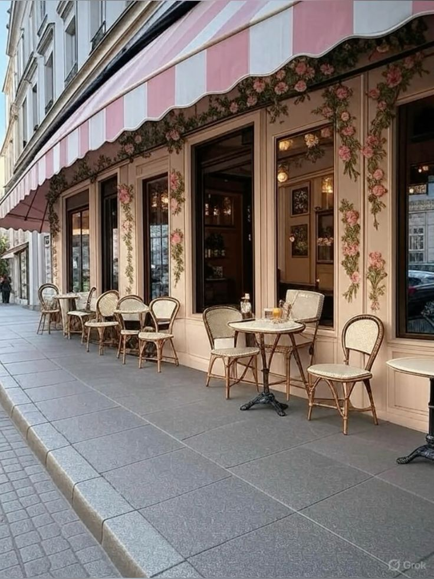
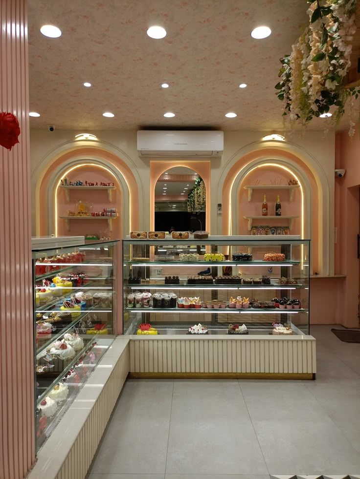

Una vetrina, un forno, un paese.

Fatto a mano, ogni giorno.
Dolce Chiara è nata come il laboratorio di quartiere che profuma di burro prima ancora che faccia giorno. Impastiamo, sfogliamo e farciamo tutto qui, dietro al bancone, con materie prime scelte e senza scorciatoie.
Non siamo una catena. Siamo la pasticceria dove ci si ricorda del tuo cappuccino, dove la torta per il compleanno di tuo figlio viene decorata come se fosse per il nostro. Il paese è cresciuto e la vetrina con lui, ma il modo di lavorare è rimasto lo stesso.
Una giornata da Dolce Chiara
- 4:30
Si accende il forno
Sfoglia, lievitati e i primi cornetti della giornata.
- 7:00
Si apre la porta
Vetrina piena, macchina del caffè calda, primi tavolini occupati.
- 10:00
Torte e pasticcini
Creme, farciture e le decorazioni delle torte su ordinazione.
- 15:30
Il pomeriggio
Ritiro degli ordini, merende e una fetta di torta al tavolo.
Cosa dicono di noi
Cornetti caldi e un cappuccino al tavolino, con calma. È diventata la mia colazione prima del lavoro.
La torta per i sei anni di mio figlio era esattamente come l'avevo disegnata, dedica compresa. E buonissima.
Vassoio per la comunione: pasticcini freschissimi e presentati benissimo. Ci hanno aiutato anche a calcolare le quantità.
Si ricordano sempre il mio ordine. Il sabato mattina qui è un piccolo rito.
Macarons ottimi, difficili da trovare così buoni fuori città. Vetrina curatissima.
Abbiamo regalato un buono a mia madre per la festa della mamma: è stata contentissima.
Prima di venire
Serve prenotare per sedersi al tavolino?
No. I tavolini sono liberi: entri, scegli al banco e ti siedi. Per gruppi numerosi chiamaci prima, così ti teniamo i posti vicini.
Con quanto anticipo devo ordinare una torta?
Almeno 3 giorni. Sotto le feste, e per torte a due piani, meglio una settimana. Il configuratore ti lascia scegliere solo date possibili.
Fate dolci senza glutine o senza lattosio?
Su richiesta possiamo preparare alcune ricette senza lattosio o senza frutta a guscio. Il laboratorio però lavora anche questi ingredienti, quindi non possiamo garantire l'assenza di tracce: per allergie gravi parliamone prima.
Posso portare una foto o un'idea per la decorazione?
Certo. Mandaci l'immagine su WhatsApp insieme alla richiesta e ti diciamo cosa si può realizzare.
Consegnate a domicilio?
Di solito si ritira in negozio. Per eventi grandi a Nogara e dintorni chiamaci: vediamo insieme come organizzarci.
Come funziona il buono regalo?
Lo richiedi dal sito, lo prepariamo stampato e lo ritiri in negozio. Chi lo riceve può usarlo per colazioni, dolci in vetrina o torte su ordinazione.
Orari e dove siamo
IndirizzoVia Palmino Sterzi 41, 37054 Nogara (VR)
Telefono e WhatsApp+39 366 548 8260 Emailstudiomenny.web@gmail.comPer mostrarti la mappa dobbiamo caricare Google Maps, che può usare cookie propri. La carichiamo solo se sei d'accordo.